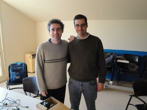
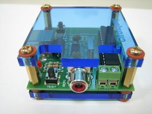
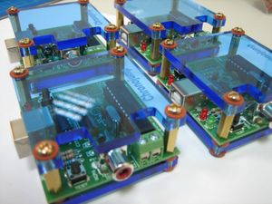
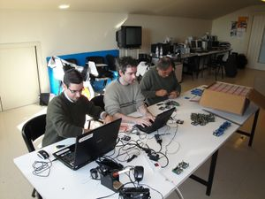
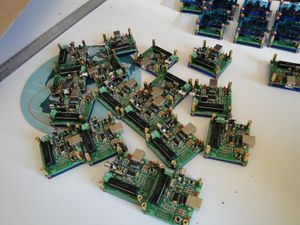
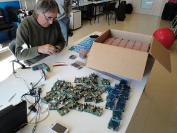
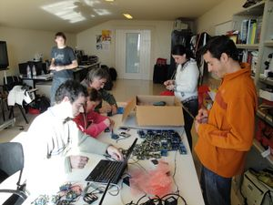

|  Xavier de Blas y Juan González |
El 28 de Enero de 2010 me fuí a Barcelona a ayudar a Xavier de Blas en el proyecto Chronojump. Ha fabricado 500 tarjetas Chronopic en Taiwan, pero el bootloader lo grabaron mal (o no lo grabaron) y por tanto no se podía descargar el firmware de Chronojump. Xavi me pidió ayuda y me fui para Barcelona. LLegué en el AVE de las 9:30 y me regresé en el de las 16:30. Poco tiempo pero intenso ;-)
|  Tarjeta Chronopic |
 Varias Chronopics |
Para grabar el bootloader usamos dos skypics y el software Pyburn. La verdad es que grabar otra skypic usando una skypic es tremendamente sencillo usando este software.
El único inconveniente es que hubo que quitar el metacritalo de la parte superior de las chronopics, sacar el pic, pincharlo en una skypic y grabarlo.
Establecimos el centro de operaciones en el "Tech Lab" de Jose María Padullés en el Institut Nacional d'Educació Física de Catalunya (INEFC)
|  De derecha a izquierda: Josep María Padullés, Xavier de Blas y Juan Gonzalez |
 Chronopics con el Bootloader y firmware grabados |
Conseguimos programar y dejar listas unas 160 Chronopics, gracias a la ayuda de varios estudiantes.
|  Jose María Padullés desmontando las Chronopics |
 Estudiantes ayudando al montaje de las Chronopics |
A Xavi no lo veía desde la lectura de mi tesis. Nos solemos ver pocas veces. Tal vez una vez al año. Pero los encuentros son muy productivos ;-)